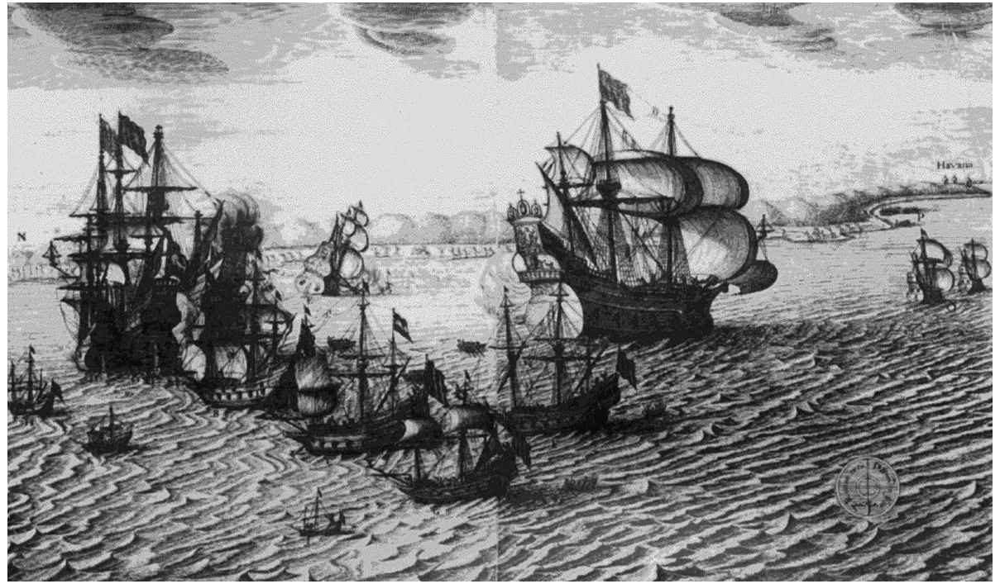
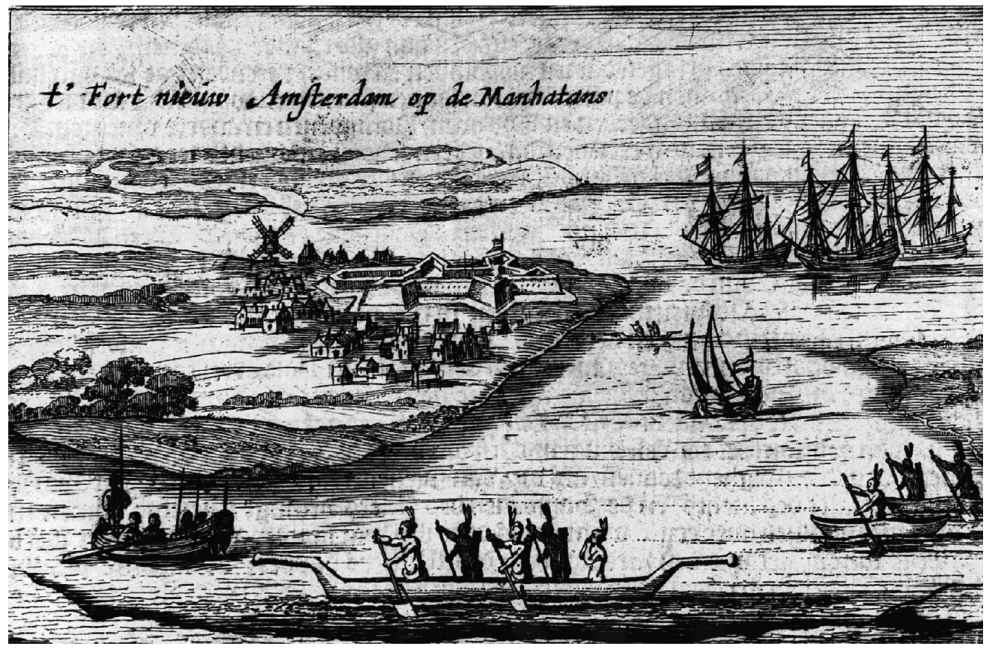

17世纪，荷兰的势力和繁荣显著增长，这在某种程度上是由于其地理位置颇为有利。荷兰背靠广阔的德意志腹地，面傍欧洲两条古老的商船航线——一条为北南方向，从卑尔根到直布罗陀；另一条为东西方向，从芬兰湾到英国——的交通枢纽。沿这些航线运送的基本贸易商品有：比斯开湾的鲱鱼和盐，地中海地区的酒，英国和佛兰德的布匹，瑞典的铜和铁，以及波罗的海地区的谷物、亚麻、大麻、木材和木制品。
荷兰人是通过从事这些商品的运输开始他们的伟大发展的。其商船队的崛起全靠当地的沿海渔业。荷兰人发明了保存、腌制和烟熏的新方法，并向欧洲各地出口他们的捕获物，以换取谷物、木材和盐。随着西班牙和葡萄牙海外帝国的建立，荷兰人在塞维利亚和里斯本得到新的殖民地出产的货物，运销欧洲各地。作为回报，他们向伊比利亚国家供应波罗的海的谷物和海军补给品。荷兰人用三桅商船即大型平底船——一种造价低廉、却拥有巨大容积的普通运输船——运输这些货物。以往，典型的商船一向用笨重的木材建造，船尾设炮座平台，可架置火炮，在必要时作为军舰。荷兰人首先冒险建造一种仅能运送货物、不可装置火炮的专用商船。三桅商船船身宽、船底平、居住舱室有限，因此，具有最大的货舱空间，而且极其节省建船材料。这种缓慢、丑陋但便宜、宽敞的大轮船是开始控制世界海洋的荷兰商船队的主要依靠。
16世纪末叶，荷兰人开始向葡萄牙在东方的帝国挑战。首要的任务是搜集可靠资料，指导航海者找到绕过好望角的漫长航线。葡萄牙人为了将这类情报对他们的对手保密，采取了最有力的预防措施，但是，他们的航海秘密还是逐渐泄露出去。荷兰人纷纷涌入东方海域。仅1598年一年中，远航东方的船队就不少于5支，有船22艘。从一开始，荷兰人就胜过葡萄牙人。他们是更好的海员，能够用他们的三桅商船更便宜地运输香料，而且，由于他们本国的工业优于伊比利亚国家的工业，他们的贸易商品也较后者价廉物美。
1602年，荷兰人将他们的各种私营贸易公司合并成一家国营公司——荷兰东印度公司。虽然早两年即1600年时，英国人已组织了他们自己的东印度公司，但是，他们敌不过荷兰人。英国公司的认购资本很小，而且，在后来的数年中，荷兰公司还在东印度群岛建立了设防据点网。设立据点需要与当地统治者订立条约，条约导致联盟，而联盟促成保护关系。到17世纪末，荷兰人实际管理的地区虽然仅一小块，但已成为荷兰的保护国的国家却很多，构成了一块大得多的地区。接着，18世纪、19世纪期间，荷兰全部并吞了这些保护国，建立起一个拥有庞大地域的帝国。

图157 到17世纪时，荷兰人已经构成了对西班牙海上优势的严峻挑战。图中荷兰人正在捕获西班牙船只。
约1700年以后，出口香料到欧洲的益处减少了，不过，荷兰人通过将咖啡树引入东印度群岛，发展起一种新的经济资源。刚开始时，即1711年，他们仅收获100磅咖啡，而到1723年，他们却在销售1200万磅咖啡。因而，随着欧洲人养成喝咖啡的嗜好，荷兰人成为这种外来饮料的主要供应者。荷兰东印度公司通过这种种手段，在整个17世纪和18世纪中平均每年得股息18%。
然而，荷兰人的海外活动并不仅限于东印度群岛。在环绕斯匹次卑尔根群岛的北极海域，荷兰人实际上垄断了捕鲸业。在俄国，他们远远胜过英国的莫斯科公司。他们还控制了繁盛的波罗的海贸易，成为西欧最重要的海军补给品——木材、沥青、焦油、制绳索用的大麻以及制风帆帆布用的亚麻——的主要供应者。
他们的商船队早在1600年时就拥有1万艘船，是当时世界上最大的船队。荷兰的造船厂高度机械化，几乎一天就能生产一条船。此外，船的制造和操作亦颇经济合算，荷兰船主可以削价与竞争者抢生意。因而，他们充当了西班牙、法国、英国和波罗的海国家之间的运输业者。英国人直到18世纪才能在商船运输方面与荷兰人竞争。
在美洲，荷兰人于1612年在曼哈顿岛建立了有利可图但又短命的新阿姆斯特丹城，而且还短时间地占据了西印度群岛的各个岛屿和沿海狭长地带。但是，荷兰所有殖民地中最持久的是1652年在南非好望角开拓的一小块殖民地。这里不是一个贸易站，而是为了向去东方途中的船只提供燃料、水和新鲜食物而建立的一块真正的殖民地。这块殖民地很快便证明了它的价值。它向荷兰船和其他一些船只提供的鲜肉和新鲜蔬菜帮助制服了坏血病，拯救了数千名海员的生命。如今，这些荷兰农民即布尔人的后裔占居住在南非的300万欧洲人口的五分之三。
18世纪时，荷兰在经济发展和海外活动方面均落后于英国和法国。其衰落的一个原因在于，英、法两国政府通过颁布一系列针对荷兰人的歧视性法令，坚持不懈地努力建立起自己的商船队。荷兰人还为一系列劳民伤财的战争——1652年至1674年因商业纠纷而与英国交战，1667年至1713年因路易十四的领土野心而与法国交战——所削弱。

图158 这是目前所知最早的新阿姆斯特丹图（发表于1651年）。位于曼哈顿岛尖端的新阿姆斯特丹城市发展缓慢，港口外仅有几十所房屋和一架风车。图中所绘——后面是欧洲船只，前面是印第安人独木舟——表明了与荷兰殖民地贸易的重要性。
或许荷兰人衰落的主要原因在于荷兰人缺乏其对手所拥有的资源。法国人拥有众多的人口、繁荣的农业和一个在大西洋和地中海均有出海口的富裕祖国。英国人也拥有较荷兰人丰富得多的自然资源，并享有海岛位置带来的巨大裨益；地处海岛，使他们无须付出时常遭受入侵的代价。此外，英国人还有其海外殖民地迅速增长的财富和力量作后盾，而荷兰人仅由南非南端的一小块孤立的殖民地所支撑。因而，我们发现，英国输出品的价值就从1720年的800万英镑上升到1763年的1900万英镑，法国输出品的价值由1716年的1.2亿里弗尔增长为1789年的5亿里弗尔。已经达到顶峰的荷兰人完全不能与如此迅速的增长相匹敌。归根到底，18世纪时荷兰让位于英国和法国，其原因正与20世纪时英、法两国让位于美国和苏联的原因相同。